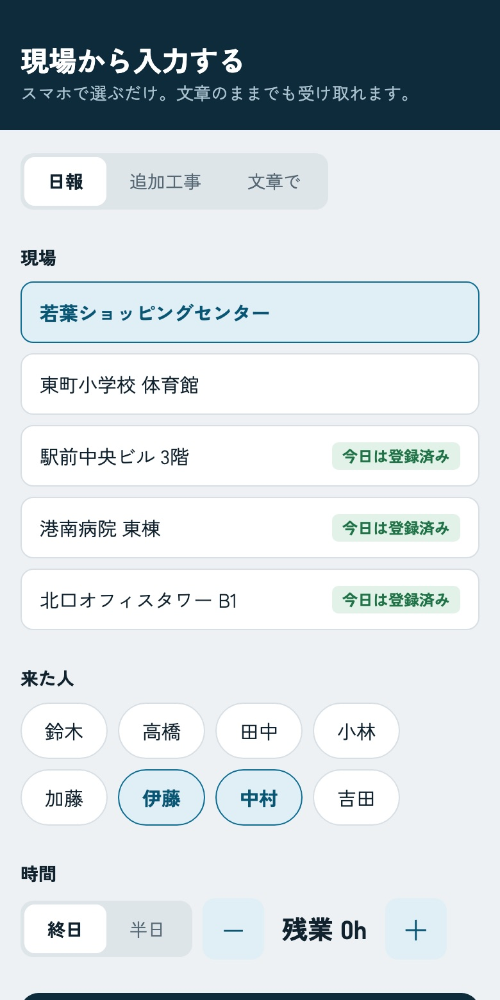
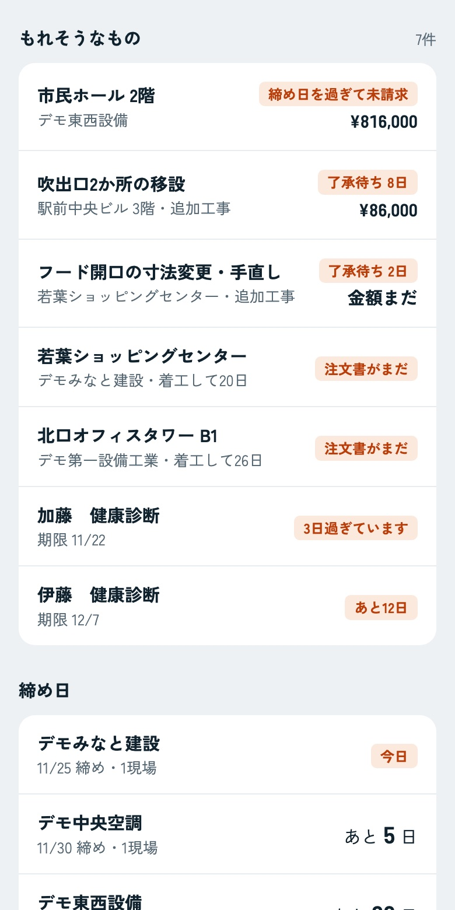
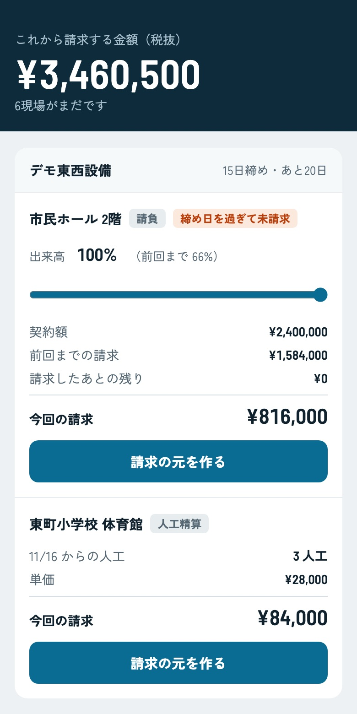
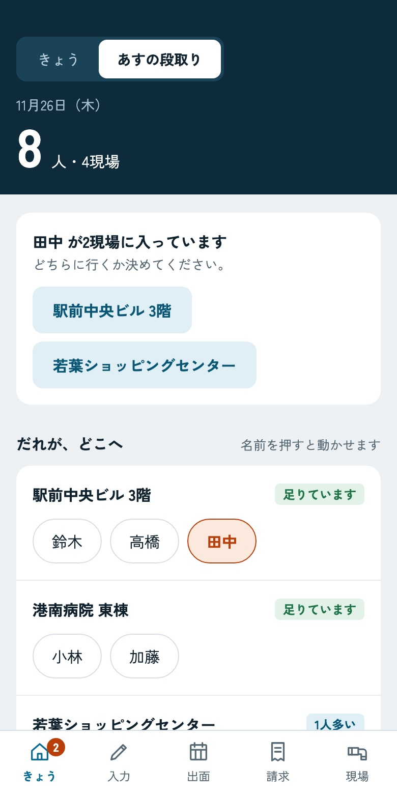

- 日報現場と人を選んで押すだけ
- 人工現場別・職人別に自動で集計
- 出来高・追加工事了承の取れたものだけが進む
- 請求の元前回まで・今回・残りがそろう
こんなこと、ありませんか
- 月末に、日報を見て人工を数え直している紙や電話のメモから、出面表へ書き写す。
- 口頭で頼まれた追加工事を、請求し忘れただれに、いつ言われたかが残っていない。
- 注文書が来ないまま、工事が始まっているあとで金額の話がかみ合わない。
- 元請ごとに締め日が違い、1件もれた気づいたときには、次の月になっている。
- 同じ人を、2つの現場に入れてしまった朝になって電話で気づく。
- 終わってから、人工の使いすぎに気づく途中で分かれば、手が打てた。
できること
日報は、スマホで選ぶだけ
現場と来た人を押すと、人工がその場で出ます。電話のメモやメールの文章を貼って、読み取らせることもできます。
- 終日・半日・残業に対応
- 同じ現場の2回目の報告は、足すか入れ替えるかを確認
- 現場や人数が分からないときは、推測せずに聞き返す

もれそうなものを、先に知らせる
締め日を過ぎた請求、了承待ちの追加工事、まだ届かない注文書、健康診断の期限。探しに行かなくても、1か所に並びます。
- 追加工事は、頼んだ人と日付を残す
- 元請の了承が取れたものだけ、請求に入る

出来高を動かすと、請求額が出る
契約額、前回までの請求、今回、残り。電卓をたたかずに、その場でそろいます。人工精算の現場は、日報の人工からそのまま計算します。
- 元請ごとの締め日に並ぶ
- 会計ソフトに入れる元の数字ができる

使いすぎと、人の重なりに気づく
進み具合と使った人工を並べて見られます。あすの段取りでは、同じ人が2現場に入っていると知らせます。
- 工事が終わる前に、人工の先行が分かる
- 段取りの文をコピーして、そのまま送れる

使い方の流れ
- 前の日だれが、どこへ段取りを決めて、文をコピーして送ります。
- 仕事のあと日報を入れる現場と人を押します。追加を頼まれたら、その場で残します。
- 締め日請求の元を作る出来高を決めて押すと、内訳ができます。
このページについて
これは試作のデモで、販売中の製品ではありません。会社名・現場名・金額はすべて架空です。
文章の読み取りは、決まった書き方だけを読む見本です。AIは使っていません。
入力した内容は保存も送信もされません。実在の会社名や個人の情報は入れないでください。